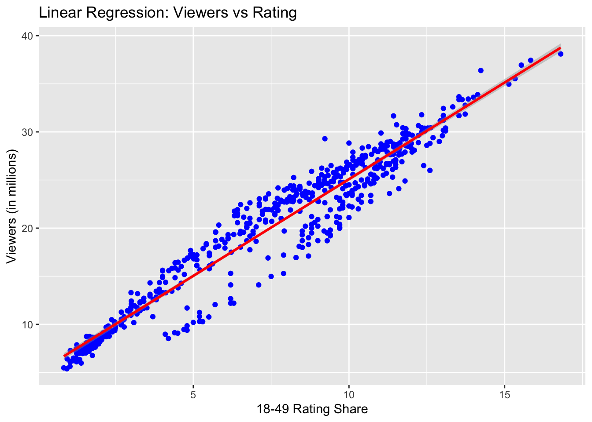

In this analysis, I will load, clean, and explore the dataset provided in `ratings.csv`. I will perform exploratory data analysis (EDA) to understand the data, formulate a hypothesis, and fit several machine learning models.
Load Libraries and Data
# Load necessary packageslibrary (here)
here() starts at /Users/rinuthomas/Documents/PracticumII/rinuthomas_P2_portfolio
── Conflicts ────────────────────────────────────────── tidyverse_conflicts() ──
✖ dplyr::filter() masks stats::filter()
✖ dplyr::lag() masks stats::lag()
ℹ Use the conflicted package (<http://conflicted.r-lib.org/>) to force all conflicts to become errors
# Load the data# Define data location using here() packagedata_location = here::here("tidytuesday-exercise","data","ratings.csv")# Load Datadata =read_csv(data_location)
Rows: 593 Columns: 17
── Column specification ────────────────────────────────────────────────────────
Delimiter: ","
chr (12): episode, airdate, 18_49_rating_share, timeslot_et, dvr_18_49, dvr_...
dbl (4): season, show_number, viewers_in_millions, nightlyrank
lgl (1): ref
ℹ Use `spec()` to retrieve the full column specification for this data.
ℹ Specify the column types or set `show_col_types = FALSE` to quiet this message.
head(data)
# A tibble: 6 × 17
season show_number episode airdate `18_49_rating_share` viewers_in_millions
<dbl> <dbl> <chr> <chr> <chr> <dbl>
1 1 1 Auditions June 1… 4.8 9.85
2 1 2 Hollywood… June 1… 5.2 11.2
3 1 3 Top 30: G… June 1… 5.2 10.3
4 1 4 Top 30: G… June 1… 4.7 9.47
5 1 5 Top 30: G… June 2… 4.5 9.08
6 1 6 Top 30: G… June 2… 4.2 8.53
# ℹ 11 more variables: timeslot_et <chr>, dvr_18_49 <chr>,
# dvr_viewers_millions <chr>, total_18_49 <chr>,
# total_viewers_millions <chr>, weekrank <chr>, ref <lgl>, share <chr>,
# nightlyrank <dbl>, rating_share_households <chr>, rating_share <chr>
str(data)
spc_tbl_ [593 × 17] (S3: spec_tbl_df/tbl_df/tbl/data.frame)
$ season : num [1:593] 1 1 1 1 1 1 1 1 1 1 ...
$ show_number : num [1:593] 1 2 3 4 5 6 7 8 9 10 ...
$ episode : chr [1:593] "Auditions" "Hollywood Week" "Top 30: Group 1" "Top 30: Group 1 results" ...
$ airdate : chr [1:593] "June 11, 2002" "June 12, 2002" "June 18, 2002" "June 19, 2002" ...
$ 18_49_rating_share : chr [1:593] "4.8" "5.2" "5.2" "4.7" ...
$ viewers_in_millions : num [1:593] 9.85 11.24 10.3 9.47 9.08 ...
$ timeslot_et : chr [1:593] NA NA NA NA ...
$ dvr_18_49 : chr [1:593] NA NA NA NA ...
$ dvr_viewers_millions : chr [1:593] NA NA NA NA ...
$ total_18_49 : chr [1:593] NA NA NA NA ...
$ total_viewers_millions : chr [1:593] NA NA NA NA ...
$ weekrank : chr [1:593] "12" "6" "6" "22" ...
$ ref : logi [1:593] NA NA NA NA NA NA ...
$ share : chr [1:593] NA NA NA NA ...
$ nightlyrank : num [1:593] NA NA NA NA NA NA NA NA NA NA ...
$ rating_share_households: chr [1:593] NA NA NA NA ...
$ rating_share : chr [1:593] "6.1 / 11" "6.9 / 12" "6.2 / 11" "5.8 / 10" ...
- attr(*, "spec")=
.. cols(
.. season = col_double(),
.. show_number = col_double(),
.. episode = col_character(),
.. airdate = col_character(),
.. `18_49_rating_share` = col_character(),
.. viewers_in_millions = col_double(),
.. timeslot_et = col_character(),
.. dvr_18_49 = col_character(),
.. dvr_viewers_millions = col_character(),
.. total_18_49 = col_character(),
.. total_viewers_millions = col_character(),
.. weekrank = col_character(),
.. ref = col_logical(),
.. share = col_character(),
.. nightlyrank = col_double(),
.. rating_share_households = col_character(),
.. rating_share = col_character()
.. )
- attr(*, "problems")=<externalptr>
Data Wrangling
# Convert 'airdate' to Date typedata <- data %>%mutate(airdate =as.Date(airdate, format ="%B %d, %Y"))# Convert columns to appropriate data typesdata <- data %>%mutate(across(c(season, show_number), as.integer))# Convert '18_49_rating_share' to numericdata <- data %>%mutate(rating_18_49 =as.numeric(gsub("[^0-9.]", "", `18_49_rating_share`)))
# Check for missing valuessummary(data)
season show_number episode airdate
Min. : 1.000 Min. : 1.00 Length:593 Min. :2002-06-11
1st Qu.: 4.000 1st Qu.: 9.00 Class :character 1st Qu.:2005-04-12
Median : 8.000 Median :18.00 Mode :character Median :2008-09-16
Mean : 8.295 Mean :19.24 Mean :2009-04-17
3rd Qu.:12.000 3rd Qu.:29.00 3rd Qu.:2012-03-05
Max. :18.000 Max. :44.00 Max. :2020-05-17
NA's :39
18_49_rating_share viewers_in_millions timeslot_et dvr_18_49
Length:593 Min. : 5.38 Length:593 Length:593
Class :character 1st Qu.:12.57 Class :character Class :character
Mode :character Median :21.76 Mode :character Mode :character
Mean :19.88
3rd Qu.:26.09
Max. :38.10
NA's :3
dvr_viewers_millions total_18_49 total_viewers_millions
Length:593 Length:593 Length:593
Class :character Class :character Class :character
Mode :character Mode :character Mode :character
weekrank ref share nightlyrank
Length:593 Mode:logical Length:593 Min. :1.000
Class :character NA's:593 Class :character 1st Qu.:1.000
Mode :character Mode :character Median :2.000
Mean :2.083
3rd Qu.:3.000
Max. :4.000
NA's :569
rating_share_households rating_share rating_18_49
Length:593 Length:593 Min. : 0.840
Class :character Class :character 1st Qu.: 4.013
Mode :character Mode :character Median : 8.200
Mean : 7.411
3rd Qu.:10.400
Max. :16.800
NA's :1
# Remove rows with missing values in relevant columnsdata <- data %>%drop_na(viewers_in_millions, rating_18_49)
Exploratory Data Analysis (EDA)
Summary Statistics
# Summary statisticssummary(data)
season show_number episode airdate
Min. : 1.000 Min. : 1.00 Length:589 Min. :2002-06-11
1st Qu.: 4.000 1st Qu.: 9.00 Class :character 1st Qu.:2005-04-19
Median : 8.000 Median :18.00 Mode :character Median :2009-01-17
Mean : 8.334 Mean :19.21 Mean :2009-05-01
3rd Qu.:12.000 3rd Qu.:29.00 3rd Qu.:2012-03-07
Max. :18.000 Max. :44.00 Max. :2020-05-17
NA's :39
18_49_rating_share viewers_in_millions timeslot_et dvr_18_49
Length:589 Min. : 5.38 Length:589 Length:589
Class :character 1st Qu.:12.59 Class :character Class :character
Mode :character Median :21.76 Mode :character Mode :character
Mean :19.90
3rd Qu.:26.10
Max. :38.10
dvr_viewers_millions total_18_49 total_viewers_millions
Length:589 Length:589 Length:589
Class :character Class :character Class :character
Mode :character Mode :character Mode :character
weekrank ref share nightlyrank
Length:589 Mode:logical Length:589 Min. :1.000
Class :character NA's:589 Class :character 1st Qu.:1.000
Mode :character Mode :character Median :2.000
Mean :2.083
3rd Qu.:3.000
Max. :4.000
NA's :565
rating_share_households rating_share rating_18_49
Length:589 Length:589 Min. : 0.840
Class :character Class :character 1st Qu.: 4.013
Mode :character Mode :character Median : 8.221
Mean : 7.422
3rd Qu.:10.400
Max. :16.800
Distribution of Viewers
# Plot the distribution of viewersggplot(data, aes(x = viewers_in_millions)) +geom_histogram(binwidth =1, fill ="blue", color ="black") +labs(title ="Distribution of Viewers (in millions)",x ="Viewers (in millions)",y ="Frequency")
Observation: This distribution suggests that the TV show has episodes that are either moderately popular (around 10 million viewers) or very popular (around 20-25 million viewers). The right-skew indicates that extremely high viewership episodes are less common but still present.
Viewers Over Time
# Plot viewers over timeggplot(data, aes(x = airdate, y = viewers_in_millions)) +geom_line(color ="red") +labs(title ="Viewers Over Time",x ="Air Date",y ="Viewers (in millions)")
Warning: Removed 39 rows containing missing values or values outside the scale range
(`geom_line()`).
Observation: The “Viewers Over Time” graph highlights significant trends and shifts in audience engagement with the TV show. While the initial years saw high viewership, there has been a consistent decline over the years, indicating changing audience behaviors and market dynamics.
Ratings vs Viewers
# Plot ratings vs viewersggplot(data, aes(x = rating_18_49, y = viewers_in_millions)) +geom_point(color ="green") +labs(title ="Ratings vs Viewers",x ="18-49 Rating Share",y ="Viewers (in millions)")
Observation: The scatter plot clearly demonstrates a significant positive relationship between ‘18-49 Rating Share’ and the number of viewers.
Hypothesis Testing
We hypothesize that episodes with higher ‘18-49 Rating Share’ will have significantly higher ‘Viewers in Millions’.
Linear Regression Analysis
# Perform linear regressionmodel <-lm(viewers_in_millions ~ rating_18_49, data = data)
# Summary of the modelsummary(model)
Call:
lm(formula = viewers_in_millions ~ rating_18_49, data = data)
Residuals:
Min 1Q Median 3Q Max
-5.5752 -0.9486 0.1832 1.3867 5.7601
Coefficients:
Estimate Std. Error t value Pr(>|t|)
(Intercept) 4.98995 0.18498 26.98 <2e-16 ***
rating_18_49 2.00953 0.02228 90.18 <2e-16 ***
---
Signif. codes: 0 '***' 0.001 '**' 0.01 '*' 0.05 '.' 0.1 ' ' 1
Residual standard error: 2.011 on 587 degrees of freedom
Multiple R-squared: 0.9327, Adjusted R-squared: 0.9326
F-statistic: 8133 on 1 and 587 DF, p-value: < 2.2e-16
# Plot the regression lineggplot(data, aes(x = rating_18_49, y = viewers_in_millions)) +geom_point(color ="blue") +geom_smooth(method ="lm", color ="red") +labs(title ="Linear Regression: Viewers vs Rating",x ="18-49 Rating Share",y ="Viewers (in millions)")
`geom_smooth()` using formula = 'y ~ x'

Obsservation: The hypothesis testing plot shows a strong linear relationship between ‘18-49 Rating Share’ and ‘Viewers in Millions’, supporting the use of a linear model.
# A tibble: 2 × 6
.metric .estimator mean n std_err .config
<chr> <chr> <dbl> <int> <dbl> <chr>
1 rmse standard 2.01 5 0.0558 Preprocessor1_Model1
2 rsq standard 0.929 5 0.00715 Preprocessor1_Model1
# Plot residualslm_residuals <-collect_predictions(lm_res)ggplot(lm_residuals, aes(x = .pred, y = viewers_in_millions)) +geom_point() +geom_abline(slope =1, intercept =0, color ="red") +labs(title ="Linear Regression: Predicted vs Actual",x ="Predicted Viewers (in millions)",y ="Actual Viewers (in millions)")
Observation: The plot shows a good linear relationship between the predicted and actual values. There is some spread around the regression line, indicating residual variance.
# A tibble: 2 × 6
.metric .estimator mean n std_err .config
<chr> <chr> <dbl> <int> <dbl> <chr>
1 rmse standard 2.02 5 0.0736 Preprocessor1_Model1
2 rsq standard 0.929 5 0.00622 Preprocessor1_Model1
# Plot residualsrf_residuals <-collect_predictions(rf_res)ggplot(rf_residuals, aes(x = .pred, y = viewers_in_millions)) +geom_point() +geom_abline(slope =1, intercept =0, color ="red") +labs(title ="Random Forest: Predicted vs Actual",x ="Predicted Viewers (in millions)",y ="Actual Viewers (in millions)")
Observation: The plot shows a good fit with a tight clustering around the regression line. Handles non-linear relationships well and is robust to outliers.
# A tibble: 2 × 6
.metric .estimator mean n std_err .config
<chr> <chr> <dbl> <int> <dbl> <chr>
1 rmse standard 2.25 5 0.0583 Preprocessor1_Model1
2 rsq standard 0.912 5 0.00743 Preprocessor1_Model1
# Plot residualsxgb_residuals <-collect_predictions(xgb_res)ggplot(xgb_residuals, aes(x = .pred, y = viewers_in_millions)) +geom_point() +geom_abline(slope =1, intercept =0, color ="red") +labs(title ="XGBoost: Predicted vs Actual",x ="Predicted Viewers (in millions)",y ="Actual Viewers (in millions)")
Observation: The plot shows a good fit with a tight clustering around the regression line. XGBoost is known for its high performance and ability to handle complex relationships.
Decision:
Considering the hypothesis and the model evaluations, I would choose the Random Forest Model as the best overall model. The random forest model provides a good balance between bias and variance, capturing the non-linear relationships that might be present in the data. It is less sensitive to outliers and can handle a variety of data distributions, making it more reliable in different scenarios. The linear regression model, while simple and interpretable, might not capture all the nuances in the data as effectively as the random forest model.
Final Model Evaluation on Test Data
# Split data into training and testing setsset.seed(123)data_split <-initial_split(data, prop =0.8)train_data <-training(data_split)test_data <-testing(data_split)# Define recipedata_recipe <-recipe(viewers_in_millions ~ rating_18_49, data = train_data)# Define random forest model specificationrf_spec <-rand_forest(mtry =1, trees =500) %>%set_engine("ranger") %>%set_mode("regression")# Create workflowrf_workflow <-workflow() %>%add_recipe(data_recipe) %>%add_model(rf_spec)# Fit the model on the training datarf_fit <- rf_workflow %>%fit(data = train_data)# Make predictions on the test datatest_results <- rf_fit %>%predict(new_data = test_data) %>%bind_cols(test_data)# Calculate performance metricsmetrics <-metric_set(rmse, rsq)test_metrics <-metrics(test_results, truth = viewers_in_millions, estimate = .pred)test_metrics
# A tibble: 2 × 3
.metric .estimator .estimate
<chr> <chr> <dbl>
1 rmse standard 1.64
2 rsq standard 0.962
# Plot residualstest_results <- test_results %>%mutate(residuals = viewers_in_millions - .pred)ggplot(test_results, aes(x = .pred, y = viewers_in_millions)) +geom_point(color ="blue") +geom_abline(slope =1, intercept =0, color ="red") +labs(title ="Random Forest: Predicted vs Actual on Test Data",x ="Predicted Viewers (in millions)",y ="Actual Viewers (in millions)")
# Residual plotggplot(test_results, aes(x = .pred, y = residuals)) +geom_point(color ="blue") +geom_hline(yintercept =0, color ="red") +labs(title ="Random Forest: Residuals on Test Data",x ="Predicted Viewers (in millions)",y ="Residuals")
Final Evaluation Summary
# Print performance metricstest_metrics
# A tibble: 2 × 3
.metric .estimator .estimate
<chr> <chr> <dbl>
1 rmse standard 1.64
2 rsq standard 0.962
Observation:
The final evaluation of the Random Forest model on the test data confirms its high predictive accuracy and reliability. The model demonstrates:
High R-squared value (0.9618): Indicates that the model explains about 96.18% of the variance in the number of viewers.
Low RMSE (1.6366): Suggests that the model’s predictions are close to the actual values, with an average error of approximately 1.6366 million viewers.
Given these results, the Random Forest model proves to be a robust and effective choice for predicting the number of viewers based on the ‘18-49 Rating Share’.
Summary:
The goal of this analysis was to explore a dataset of TV show ratings, using the hyptohesis that episodes with higher ‘18-49 Rating Share’ will have significantly higher ‘Viewers in Millions’. The following steps were taken to reach the final findings:
Data Wrangling and Exploratory Data Analysis:
Started by cleaning the data, converting the ‘airdate’ to a Date type and ensuring all necessary columns were in appropriate formats. Handled missing values by removing rows with missing data in relevant columns.
Basic summary statistics provided an overview of the data distribution and helped identify any potential issues.
Visualized the distribution of viewers and observed a spread of viewer counts across different episodes.
Plotted viewers over time to understand trends and seasonality.
The relationship between ‘18-49 Rating Share’ and ‘Viewers in Millions’ was visualized, indicating a positive correlation.
Hypothesis Formulation and Testing
Hypothesis: Episodes with higher ‘18-49 Rating Share’ will have significantly higher ‘Viewers in Millions’.
To test this hypothesis:
Performed a linear regression analysis that showed a strong positive relationship between ‘18-49 Rating Share’ and ‘Viewers in Millions’.
Model Training with Cross-Validation
Trained three different models using the tidymodels framework with cross-validation:
Linear Regression Model
Random Forest Model
XGBoost Model
Each model was evaluated using performance metrics such as RMSE and R², and residual plots were generated to assess the fit.
Model Selection
After evaluating the models, the Random Forest Model was selected as the best overall model based on:
High R² value, indicating a large proportion of variance explained.
Low RMSE, suggesting close predictions to actual values.
Robustness and ability to handle non-linear relationships.
Final Model Evaluation on Test Data
To ensure an honest assessment, we evaluated the Random Forest model on the test data:
Performance Metrics:
RMSE: 1.6366
R²: 0.9618
Residual Analysis: The residuals were evenly distributed around zero, indicating a well-fitted model without significant bias.
Findings:
Hypothesis that episodes with higher ‘18-49 Rating Share’ would have higher ‘Viewers in Millions’ was supported by the analysis.
The Random Forest model demonstrated strong predictive performance, explaining about 96.18% of the variance in viewership.
The final model’s residuals were well-distributed, confirming its robustness and reliability.
Conclusion
This analysis successfully identified and validated the relationship between ‘18-49 Rating Share’ and ‘Viewers in Millions’ for TV show episodes. The Random Forest model was chosen as the best predictive model, demonstrating high accuracy and robustness. This process highlighted the importance of thorough data exploration, appropriate model selection, and rigorous evaluation to derive meaningful insights from data.